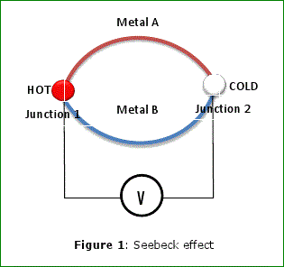

Seebeck Effect
When the two different electrical conductors or semiconductors are kept at different temperatures, the system results in the creation of electrical potential. This was discovered by German physicist Thomas Seebeck (1770-1831). Seebeck discovered this by observing a compass needle which would be deflected when a closed loop was formed between those two different metals or semiconductors. Seebeck initially believed that it was due to the magnetism induced by the temperature difference’s and he called the effect as thermo-magnetic effect. However Danish physicist Hans Christian Orsted realized that it’s an electrical electric current that is induced, which because of Ampere law deflects the magnet.

Explanation of Seebeck effect: -
The valence electrons in the warmer part of metal are solely responsible for that and the reason behind this is thermal energy. Also because of the kinetic energy of these electrons, these valence electrons migrate more rapidly towards the other (colder) end as compare to the colder part electrons migrate towards warmer part. The concept behind their movement is
- At hot side Fermi distribution is soft i.e. the higher concentration of electrons above the Fermi energy but on cold side the Fermi distribution is sharp i.e. we have fewer electrons above Fermi energy.
- Electrons go where the energy is lower so therefore it will move from warmer end to the colder end which leads to the transporting energy and thus equilibrating temperature eventually
Or in simple words we can come to conclusion that the electrons on a warmer end have a high average momentum as compared to the colder one. Therefore they will take energy with them (more in no.) as compared to the other one.
This movement results in the more negative charge at colder part than warmer part, which Leads to the generation of electrical potential. If this pair is connected through an electrical circuit. It results in the generation of a DC. However the voltage produced is few microvolt (10-6) per Kelvin temperature difference. Now we all are aware of the fact that the voltage increase in series and electric current increase in parallel. So keeping this fact in mind if we can connect many such devices to increase the voltage (in case of series connection) or to increase the maximum deliverable electric current (in parallel). Keeping care of only one thing that a large temperature difference is required for this purpose. However one thing must keep in mind that we have to maintain constant, but different temperature and therefore the energy distribution at both the end will be different and hence it leads to the successful mentioned process.
Seebeck Coefficient
The voltage produced between the two points on a conductor when a consistent temperature difference of 1° Kelvin is maintained between them is termed as Seebeck coefficient. One such combination of copper constantan, has a seebeck coefficient of 41 micro-volt per Kelvin at room temperature.
Spin Seebeck Effect
However, in the year 2008 it was observed that when the heat is applied to a magnetized metal, its electron rearranges according to its spin. This rearrangement however not responsible for the creation of heat. This effect is K/w as spin Seebeck effect. This effect used in the development of fast and efficient micro switches.
Applications of Seebeck Effect
1)This Seebeck effect is commonly used in a thermocouples to measure the temperature differences or to actuate the electronic switches that can turn the system on or off. Commonly used thermocouple metal combinations include constantan / copper, constantan / iron, constantan / chromel and constantan / alumel.
2)The Seebeck effect is used in thermoelectric generator, which function like a heat engine.
3)These also used in some power plants in order to convert waste heat into additional power.
4)In automobiles as automotive thermoelectric generators for increasing fuel efficiency.
 by
by {kind=link}